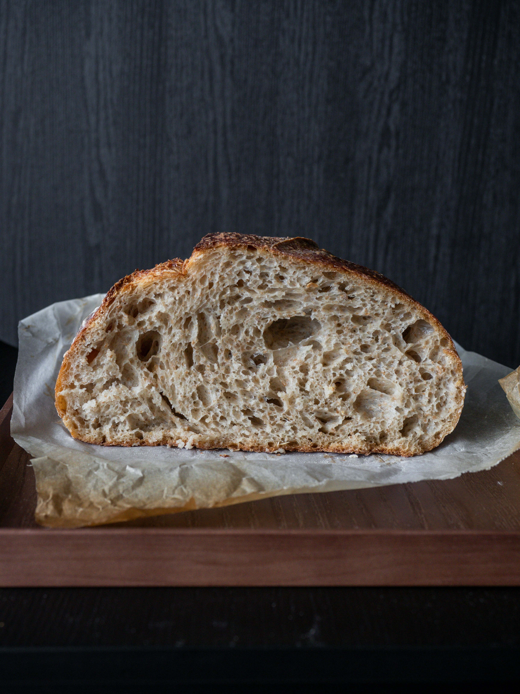
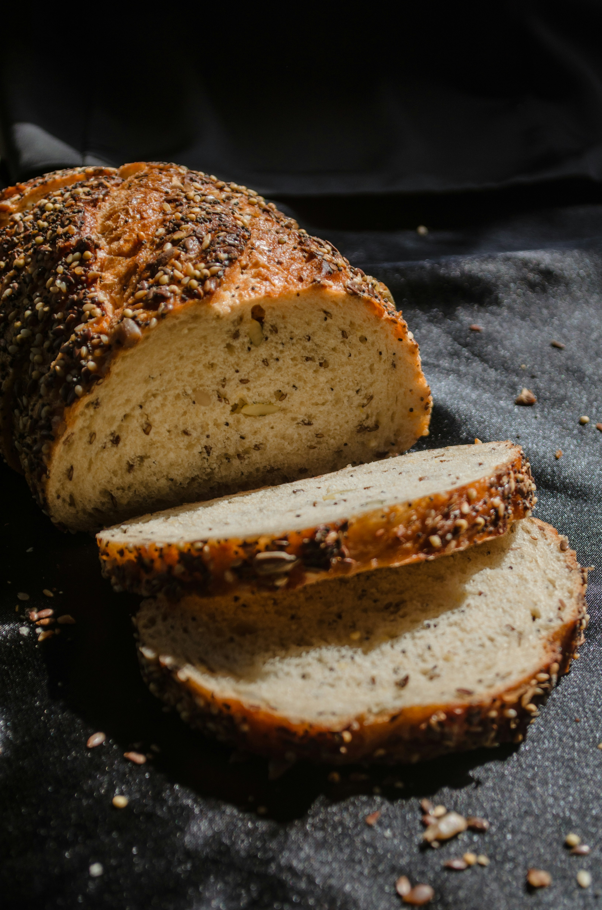

Nuestras Recetas Guiadas
Fórmulas probadas con porcentajes de panadero para lograr la miga perfecta en tu hogar.
Hogaza Tradicional de Campo

Corteza crujiente y miga alveolada lograda con 70% de hidratación.
Ingredientes
- Harina de trigo 000 (o de fuerza): 500 g
- Agua tibia: 350 g (70% de hidratación)
- Masa madre activa: 100 g (20%)
- Sal fina: 10 g (2%)
Paso a Paso
- Autólisis: Mezcla harina y 325 g de agua. Deja reposar 40 minutos.
- Incorporación: Integra la masa madre, sal y los 25 g de agua restantes.
- Fermentación en bloque: Realiza 4 tandas de pliegues cada 30 minutos durante las primeras 2 horas.
- Formado y frío: Da forma de hogaza, coloca en banetón y lleva a la heladera (4 °C) durante 14 horas.
- Horneado: Hornea en olla Dutch Oven a 230 °C (20 min con tapa y 20 min sin tapa a 200 °C).
Hogaza Integral con Semillas

Pan nutritivo con mezcla de semillas de girasol, sésamo, lino y zapallo.
Ingredientes
- Harina integral de trigo: 300 g
- Harina 000 de fuerza: 200 g
- Agua: 375 g (75% de hidratación)
- Masa madre activa: 100 g (20%)
- Sal fina: 10 g (2%)
- Mix de semillas hidratadas: 80 g
Paso a Paso
- Hidratación de semillas: Remoja las semillas en agua tibia durante 20 minutos.
- Autólisis e integración: Mezcla harinas y agua por 45 minutos antes de incorporar la masa madre y sal.
- Inclusión: Incorpora las semillas en el segundo pliegue de la fermentación.
- Horneado: Hornea tapado a 230 °C por 25 minutos y destapa para dorar la corteza.